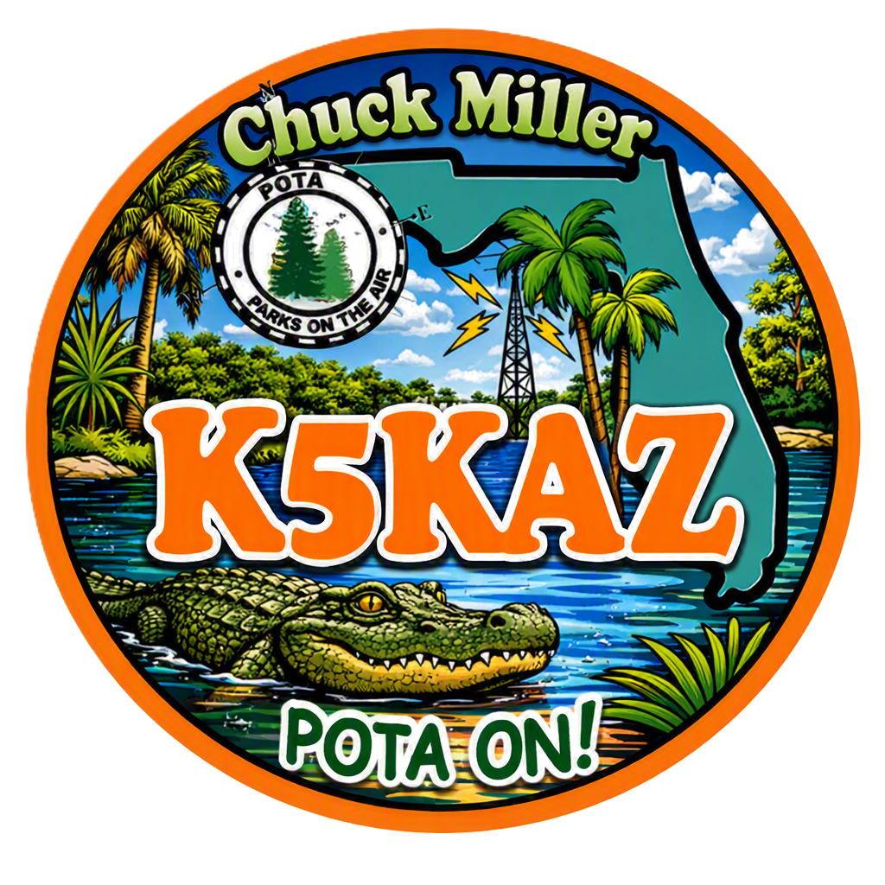
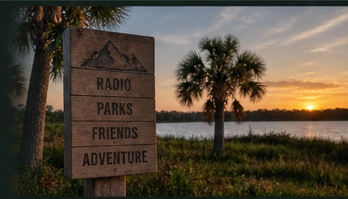
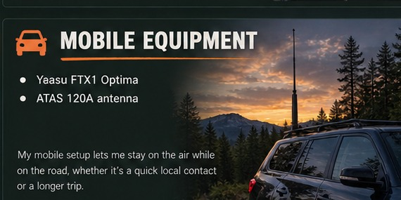
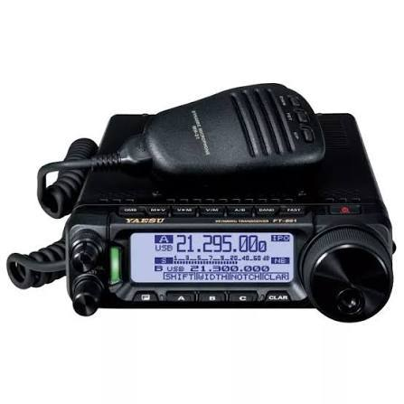

K5KAZ
● ABOUT ME
Originally from Boston, MA, I moved to Hudson, Florida in 2013 after retiring from Verizon Communications, formerly New England Telephone, following 36 years of service.
I got my Amateur Radio Technician license in April 2022 and upgraded to General in September 2022. In September 2026, I upgraded to Amateur Extra.
I joined the Gulf Coast Amateur Radio Club (GCARC) in June 2022.
Amateur radio has become a great way for me to combine radio, technology, and the outdoors — especially through Parks on the Air (POTA).

⌁ MY STATION
- Yaesu FT-710 AES (HF)
- ICOM IC-2730 (VHF/UHF)
My home station is set up for HF and VHF/UHF operations. It gives me the flexibility to enjoy DX, local nets, and stay connected with the amateur radio community.

◆ MOBILE EQUIPMENT
- Yaesu FTX1 Optima
- ATAS 120A antenna
My mobile setup lets me stay on the air while on the road, whether it’s a quick local contact or a longer trip.

♟ PORTABLE EQUIPMENT
- Yaesu FT-891
- EFHW Spooltenna
- BuddiStick Pro
- 17 ft Telescopic whip
My portable gear is lightweight, versatile, and ready for Parks on the Air (POTA) activations and other outdoor adventures.
